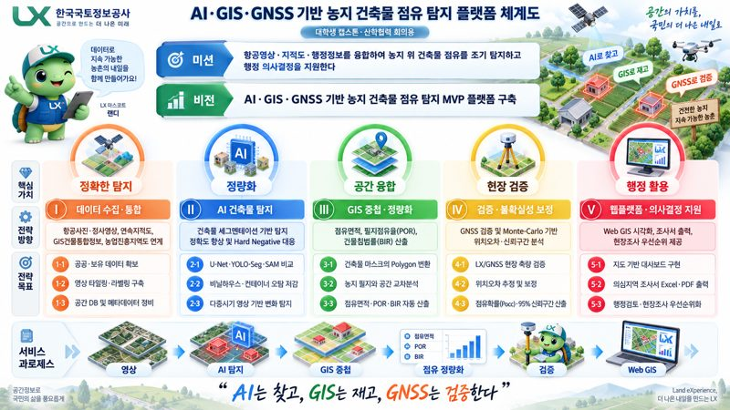

바로 보기 · 공유용
농지·건축물 의심조사서 A4
PDF 원본 · 660 KB
항목 구성, 근거 이미지 배치, A4 출력 가독성을 확인하는 기준 자료입니다.
회의 전에도, 회의 후에도. 같은 자료를 보며 다음 결정을 준비하세요.
A4 조사서와 한글 편집 원본을 함께 확인하고,
근거 이미지·표현 방식·검토 항목을 논의합니다.

프로젝트 체계도부터 14주 로드맵까지
연구와 개발을 함께
논의하는 이미지 10장
PDF 원본 · 660 KB
항목 구성, 근거 이미지 배치, A4 출력 가독성을 확인하는 기준 자료입니다.
HWPX 원본 · 165 KB
검토한 내용을 반영하거나 조사 대상에 맞게 작성할 수 있는 한글 문서입니다.
아래 템플릿에 의견을 적고 복사해 사용 중인 메신저나 회의록에 전달하세요.
이 입력란은 공유 게시판이 아니며 작성 내용은 서버에 저장되지 않습니다.
이미지에 포함된 수치와 일정은 회의용 예시·계획입니다. 연구방법의 보완사항은 프로젝트 소개와 개발 계획에서 함께 확인하세요.